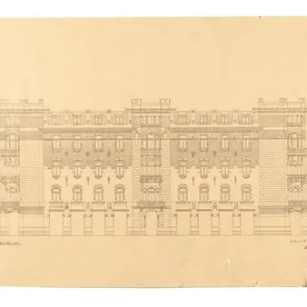

da mar 22 set a dom 18 ott
Antonio Lasciac - Tratti Di Storia Ritrovata
La Fondazione Cassa di Risparmio di Gorizia presenta una selezione esclusiva del fondo di oltre 300 disegni dell'architetto Antonio Lasciac, recentemente acquisiti e in gran parte mai mostrati al pubblico. La mostra offre un percorso affascinante attraverso tavole e schizzi…
 Indicazioni
Indicazioni
- Costi e prenotazioni
- Costo non indicato · Prenotazione non indicata
- Programma
- Programma da verificare. Apri la fonte ufficiale per orari e possibili aggiornamenti.
- In caso di maltempo
- Nessuna indicazione specifica pubblicata.
- Note
- Acquisito automaticamente dalla fonte.
L’EVENTO
Descrizione completa
La Fondazione Cassa di Risparmio di Gorizia presenta una selezione esclusiva del fondo di oltre 300 disegni dell'architetto Antonio Lasciac, recentemente acquisiti e in gran parte mai mostrati al pubblico. La mostra offre un percorso affascinante attraverso tavole e schizzi originali che testimoniano il legame creativo tra Gorizia e l'Egitto.
I visitatori potranno ammirare da vicino questi preziosi documenti storici prima che vengano sottoposti ai complessi interventi di restauro e conservazione.
Visitabile nei seguenti orari:
22 – 27 settembre
- lunedì, martedì, mercoledì, giovedì, venerdì dalle 16:00 alle 19:00
- sabato, domenica dalle 10:00 alle 13:00, dalle 16:00 alle 19:00
2 – 4 ottobre
- venerdì dalle 16:00 alle 19:00
7 – 18 ottobre
22 settembre-18 ottobre
Ingresso libero. È consigliata la prenotazione
Nato a Gorizia nel 1856, nel borgo di San Rocco, Lasciac ha infatti lavorato a lungo in Egitto, dove giunse a conseguire la nomina ad architetto capo dei palazzi khediviali.
Ospite speciale dell’evento la studiosa francese Mercedes Volait, massima esperta delle connessioni e interazioni tra Egitto ed Europa nel campo dell'architettura tra Otto e Novecento, che ha rinvenuto i disegni al Cairo, nel garage di un artista egiziano a Zamalek. L’incontro è stato l’occasione, anche grazie alla presenza delle istituzioni slovene, per ripercorrere la preziosa identità multiculturale di Lasciac.
A tracciare il profilo di Lasciac e della storia di questi disegni anche l’architetto goriziano Diego Kuzmin, storico dell’architettura e grande esperto di Lasciac, nonché primo collegamento con la studiosa parigina.
Il corpus si compone anche di alcuni disegni relativi a due edifici religiosi di Gorizia: una pianta del 1891 per l'erigenda chiesa del Sacro Cuore, più tardi ampiamente ridimensionata da Max Fabiani e la proposta del 1893 per il restauro della facciata della chiesa parrocchiale di San Rocco, anch’essa non realizzata.
Da ora e per le prossime settimane, con l’intento di condividere questo storico momento con il territorio e gli esperti del settore, alcuni disegni del corpus saranno esposti al pubblico nella sala espositiva della Fondazione, a ingresso gratuito, prima del definitivo intervento di restauro.
Maggiori informazioni QUI
IL PROGRAMMA
Programma e orari
Appuntamenti raccolti dalle fonti elencate. Dove manca un orario, non è ancora disponibile in questa scheda.
Programma pubblicato
- Dal 2026-09-22 al 2026-10-18
INFORMAZIONI UTILI
Prima di partire
- Controllare la fonte prima di partire.
ORGANIZZAZIONE